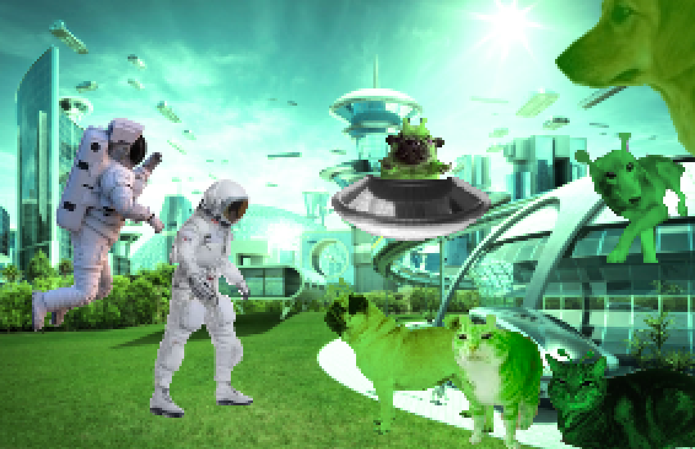

First Contact

The United States Astronauts were surprised to discover that the planet Pehostla housed super-intelligent life forms called the Glirpglorps. The Glirpians were peaceful creatures, and they told the astronauts they could live with them for a short while before they went back to Earth. During this time the Glirpibbles and astronauts shared food, culture, music, traditions, and more. When the Astronauts were ready to go back, the Glirpkitties shared a most saddening fact, the no-contact rule. The Glorpians discovered that the best way to maintain peace with alien species was to not have contact, at all. Earth agreed and a decision was made that each other's existence would be acknowledged but the two planets would promise to not interact with each other.
Global NewsGo Back